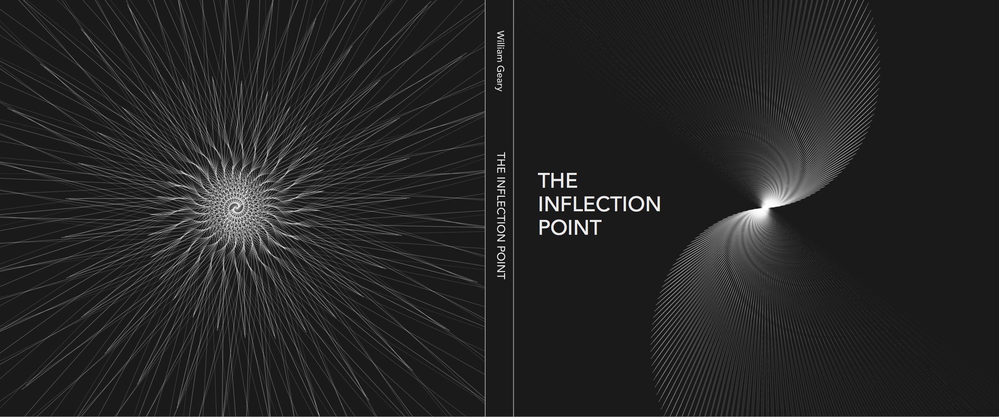

The Inflection Point
Preview
The Inflection Point is a visual essay about space-time as a coiling and uncoiling spiral, and the "Big Bang" as a middle inflection point, rather than a beginning.
This project is a work-in-progress. I plan to self-publish a print version soon!

About
This work was inspired by phyllotaxy, the botanical process through which leaves are arranged around a stem. I wondered what would happen if a phyllotactic process was to continute spiraling forever, and made this video to investigate: